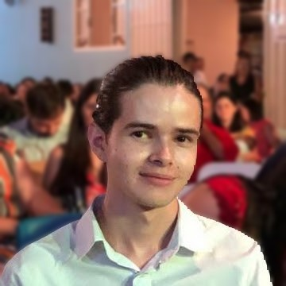
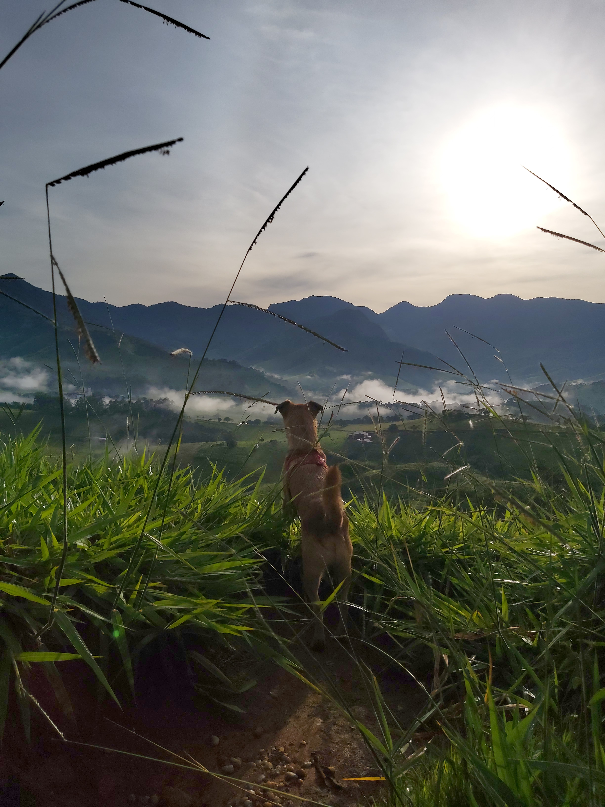

➤ Quem sou eu?

Olá! Meu nome é Felipe Cesar Rodrigues, tenho 19 anos e sou natural de São Bento do Sapucaí - SP, mas também tenho vínculos com a encantadora Luminosa, em Brazópolis - MG. Atualmente, estou no terceiro semestre do curso de Análise e Desenvolvimento de Sistemas, uma jornada empolgante em busca de conhecimento e crescimento profissional.
Em resumo, sou um estudante apaixonado em busca de conhecimento e crescimento. Minha visão de vida e determinação são os pilares que orientam meu caminho em direção ao sucesso.
Crenças
Acredito firmemente que sou o arquiteto do meu próprio destino. Cada ação, seja ela positiva ou desafiadora, é fruto das decisões que tomo. Uma citação que me inspira profundamente é de Mewtwo: "As circunstâncias do nascimento de alguém são irrelevantes. É o que você faz com o dom da vida que determina quem você é."
Objetivos e comportamento
Meu grande objetivo é me tornar o melhor naquilo que escolher fazer e conquistar todos os sonhos que sempre almejei. Sou conhecido por minha natureza quieta e observadora. Gosto de ficar no meu canto, observando as nuances das pessoas ao meu redor. Prefiro manifestar minha opinião apenas quando sinto que é necessário.
No ambiente profissional, mantenho a calma diante dos desafios. Raramente perco a compostura, uma característica que acredito ser fundamental para lidar com situações complexas. Estou sempre determinado a manter uma postura serena, mesmo quando confrontado por adversidades.
Educação
No âmbito acadêmico, estou comprometido com a excelência, atualmente focado no curso de Análise e Desenvolvimento de Sistemas. Embora minha jornada profissional esteja apenas começando, estou animado para explorar as oportunidades que o futuro reserva.
➤ Hobbies: Uma Jornada de Diversidade e Paixões
Jogar Video Games:
Amante de jogos virtuais, encontro na experiência dos video games uma forma cativante de escapar para mundos fantásticos. A paixão pelos jogos não apenas me proporciona diversão, mas também desafia minha mente e habilidades estratégicas.
Caminhar e Fazer Trilhas com Hades:
Ao lado do meu fiel companheiro, Hades, explorar trilhas e caminhar pela natureza é mais do que um hobby; é uma forma de reenergizar minha mente e corpo. Cada passo nas trilhas não só proporciona exercício físico, mas também momentos de paz e reconexão com a beleza natural.
Tenho memórias marcantes de uma infância cercada pela natureza. Durante uma trilha com meu tio, a surpresa de avistar macacos selvagens em seu habitat natural deixou uma impressão duradoura, reforçando meu respeito e admiração pela vida selvagem.
Explorando o Universo Tecnológico:
Assisto avidamente a vídeos sobre novas tecnologias, especialmente aquelas relacionadas a robótica. Meu entusiasmo por aprender sobre as últimas inovações e avanços na inteligência artificial, especialmente programada em Python, é uma paixão que alimenta meus planos futuros.
Astros Celestes e Fascínio pelo Cosmos:
O fascínio pelo desconhecido transcende a atmosfera terrestre. A contemplação dos astros celestes e a exploração de conhecimentos sobre o cosmos são fontes de inspiração e maravilha que enriquecem meu entendimento do universo.
Futebol e Paixão Corinthiana:
Como um verdadeiro apaixonado por futebol, meu coração bate forte pelo Sport Club Corinthians Paulista. Ser corintiano é mais do que torcer; é uma tradição enraizada em meu ser desde o nascimento, e a lealdade ao time é algo que carregarei para toda a vida.